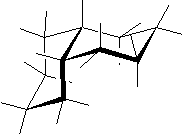
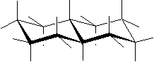

Denominamos compuestos isómeros aquéllos que, teniendo la misma composición química, difieren en su estructura tridimensional. Dado que la estructura tridimensional tiene una importancia capital en Bioquímica conviene tener un concepto claro de los distintos tipos de isomería.
En primer lugar, tenemos los Isómeros esqueletales, cuando dos compuestos de la misma composición química difieren en el esqueleto carbonado. Por ejemplo, Butano y Metilpropano:

|
Análogamente, dos compuestos de la misma composición química pueden diferir en la situación de un determinado grupo funcional: son los denominados Isómeros posicionales. Como ejemplo, tenemos el 1-Propanol y el 2-Propanol:

|
La posición relativa respecto a un doble enlace da lugar a los Isómeros geométricos, como el cis-2-Buteno y el trans-2-buteno:
La naturaleza tetraédrica del átomo de carbono saturado permite un cuarto tipo de isomería, la Isomería óptica. Cuando cuatro grupos distintos sustituyen a un mismo carbono, se pueden disponer en torno al mismo de dos maneras diferentes, siendo una la imagen especular de la otra. Tal es el caso del Gliceraldehido, que puede presentarse en dos formas distintas, que llamamos D- y L-.

|

|
Se llaman isómeros ópticos porque los compuestos con carbonos asimétricos, como el D- y el L-gliceraldehido, son capaces de desviar el plano de polarización de la luz. Una pareja enantiomérica, como los dos citados, desvían dicho plano en una magnitud igual pero de signo opuesto. En este caso, el isómero D- es dextrorrotatorio (+), mientras que el L- es levorrotatorio (-).
La Naturaleza suele tener preferencia por uno de los enantiómeros. En el caso de los monosacáridos naturales, pertenecen por lo general a la serie D. En el caso de los aminoácidos, son mayoritariamente de la serie L.
Veamos la estructura del aminoácido Alanina. En este caso, como en el Gliceraldehido, el carbono asimétrico es el 2. Cargamos en la pantalla izquierda la L-Alanina y en la derecha la D-Alanina:
Se trata, pues, de un par enantiomérico. Las proteínas naturales están formadas por aminoácidos de la serie L-.
Un caso particular de isomería en torno a un carbono tetraédrico, tiene lugar en la fusión de dos anillos alicíclicos. Tal es el caso de la decalina, formada por la fusión de dos anillos de ciclohexano. Téngase en cuenta que estos dos anillos no son planares (como sería en el caso de ciclos aromáticos, como en el naftaleno, por ejemplo) y sus carbonos están en conformación de silla. Esta fusión puede tener lugar de dos maneras, cis-Decalina y trans-Decalina:
|  |  |
| Anterior: Estructuras orgánicas | Inicio | Siguiente: D-Aldosas |